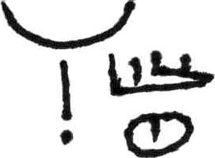
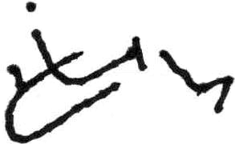

Movement
Simple Motion Lines
grow |
go ahead | [no video] |
|  old | [FIXME] |
ask |
coffee |
celebrate | [no inlineable video] |
continue |
don't know | [no video] |
enter | [no video] |
family |
follow |
hello |
hungry |
improve | [no video] |
man | [no video] |
me | [no video] |
 remember |
same |
 snake |
surprise | [no video] |
 thank you |
those/them | [no video] |
tomorrow | [no video] |
touch heart | [no video] |
understand |
want |
why |
wish | [no video] |
woman | [no video] |
you |
Repeated Motion Lines
For repeated motion the endpoint is repeated (one endpoint for each movement).
enjoy |
 bread |
 here |
Vertical Marks
A vertical mark (a small ‘T’ at the beginning of a motion line) indicate the line is drawn vertically. (The vertical mark is not used when the sign contains a body part/locative mark, since the locatives also establish direction.)
 contract/conclude | [no video] |
copy |
expand/visualize | [no video] |
Indianapolis | [no video] |
library |
|  new | [FIXME] |
 support |
write | [no video] |
Expanding/Contracting Motion Lines
When the two hands move from a common point outwards, this is indicated by endpoints at both ends of the motion line. (If there is a vertical mark it is placed at the midpoint of the motion line.)
If two hands instead meet in the middle, the endpoint is written (in a small gap in the line) in the middle. (And any vertical marks are written at the outer points of the line.)
disconnect |
story |
important |
|
meet |
 square | [no video] |
with | [FIXME] |
game | [FIXME] |
Alternating Marks
If there are two motion lines with motions performed after each other, the first motion line is marked with a half of an arrowhead (pointing towards the middle of the sign) at the endpoint.
inheritance | [no video] |
juggle |
interview | [no video] |
maybe |
Contact points
Dots appearing by themselves (as opposed to at the end of a motion line) indicate contact, either with another body part/hand, or with an imaginary surface.
 mine | [no video] |
click | [no video] |
cookie | [no video] |
owe | [no video] |
deaf |
|
food | [no video] |
home |
know | [no video] |
 rules |
satisfied/content | [no video] |
 work |